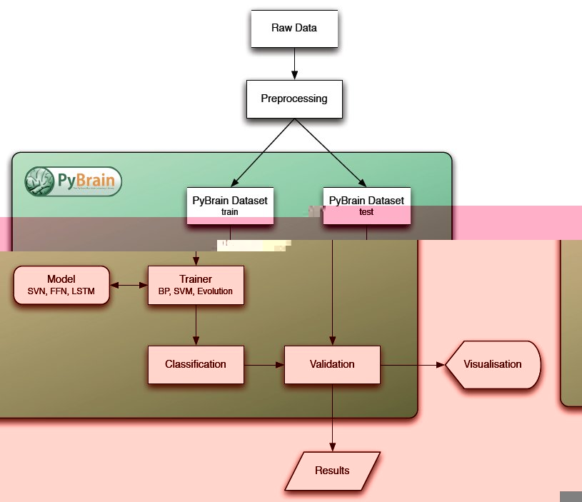

Introduction¶
PyBrain’s concept is to encapsulate different data processing algorithms in what we call a Module. A minimal Module contains a forward implementation depending on a collection of free parameters that can be adjusted, usually through some machine learning algorithm.
Modules have an input and an output buffer, plus corresponding error buffers which are used in error backpropagation algorithms.
They are assembled into objects of the class Network and are connected via Connection objects. These may contain a number of adjustable parameters themselves, such as weights.
Note that a Network itself is again a Module, such that it is easy to build hierarchical networks as well. Shortcuts exist for building the most common network architectures, but in principle this system allows almost arbitrary connectionist systems to be assembled, as long as they form a directed acyclic graph.
The free parameters of the Network are adjusted by means of a Trainer, which uses a Dataset to learn the optimum parameters from examples. For reinforcement learning experiments, a simulation environment with an associated optimization task is used instead of a Dataset.


Previous topic
Training your Network on your Dataset
Next topic
Building Networks with Modules and Connections